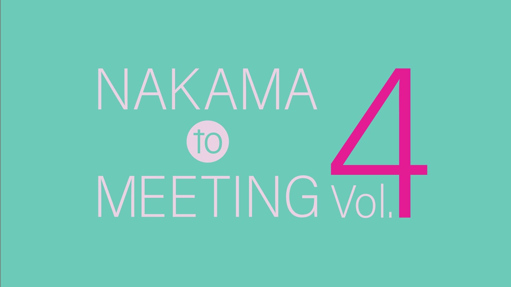

【参戦レポ】NAKAMA to MEETING Vol.4 大阪 行ってきました！
投稿日：2025年6月23日

ついにこの日が来た……！
NAKAMA to MEETING Vol.4 大阪(22日夜公演)に参加してきました。
会場の熱気、3人のパフォーマンス、そしてファンとの温かいやり取り——すべてが特別な時間でした。
※本記事はネタバレを含みます。
セットリスト
- 雨あがりのステップ（バラードVer. → 通常Ver.）
- #SINGING
- だったらDance!!
◆MC：記念撮影
- 眩しい未来（ShigTsuyo）
- SARAVAH!（吾郎ちゃん・高橋ユキヒロさんの曲）
- hard work（つよぽん・弾き語り）
- Circus Funk（慎吾ちゃん）
MC:ロハスコンビ
◆借り物競争コーナー
- 吾郎ちゃん：アリーナ席「会員番号下3桁 621」
- つよぽん：上手スタンド「10色ペン」
- 慎吾ちゃん：下手スタンド「カンペンケース」
◆じゃんけん大会✊🏻✌🏻✋🏻
会場が一体となる大盛り上がりの時間でした！
◆1分間のSNSタイム
写真撮影OKタイム！「#NAKAMAtoMEETING_vol4」などでSNS投稿し、公演後も盛り上がりました📱
◆VTRコーナー
「なにこれ？」映像や、3人のこの1年を振り返る特別VTRが上映され、会場には感動の空気が広がりました。
- 新しい詩
- 星のファンファーレ
- 72かのナニかの何？
- 72
最後はお見送りタイムまであり(慎吾ちゃんでした💚)、3人の優しさに包まれて帰路につきました。
この場所にいられたことが本当に幸せ。
「新しい地図を応援していてよかった」と心から思えた1日でした。
まとめ：信じる気持ちを大切に
最近はいろいろな報道や不安が重なる中で、「本当に信じていいのか？」と思うこともあります。
でも、飯島さんについていった新しい地図の3人は、自分たちの言葉と行動でずっと“誠実”を見せてきました。
だから私は、これからも彼らを信じてついていきたいと思います。